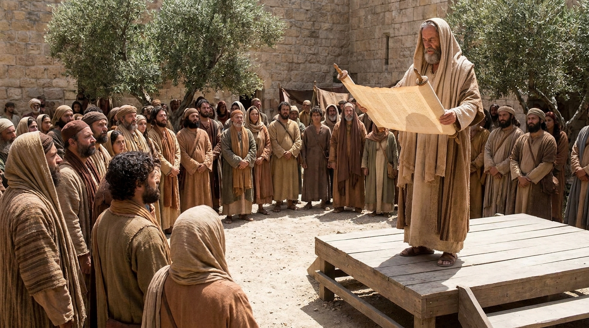

O Retorno e a Reconstrução
O livro de Esdras documenta o cumprimento da promessa de Deus de trazer o Seu povo de volta após 70 anos de exílio na Babilônia. O livro se divide em dois grandes momentos: primeiro, o retorno liderado por Zorobabel para reconstruir o Templo em Jerusalém; e, décadas depois, a chegada do sacerdote e escriba Esdras, focado em trazer restauração espiritual e ensinar novamente a Lei de Deus ao povo.
Ficha Técnica
- Autor: A tradição judaica atribui ao próprio sacerdote e escriba Esdras.
- Tema Principal: A fidelidade de Deus às Suas promessas, o retorno do exílio, a reconstrução do Templo e a restauração da Palavra.
- Versículo-Chave: "Pois Esdras tinha decidido dedicar-se a estudar a Lei do Senhor e a praticá-la, e a ensinar os seus decretos e mandamentos em Israel." (Esdras 7:10)
Estrutura
- O decreto de Ciro e o primeiro retorno liderado por Zorobabel (Caps. 1-2)
- A reconstrução e dedicação do Segundo Templo enfrentando oposições (Caps. 3-6)
- O retorno liderado por Esdras e suas reformas morais e espirituais (Caps. 7-10)